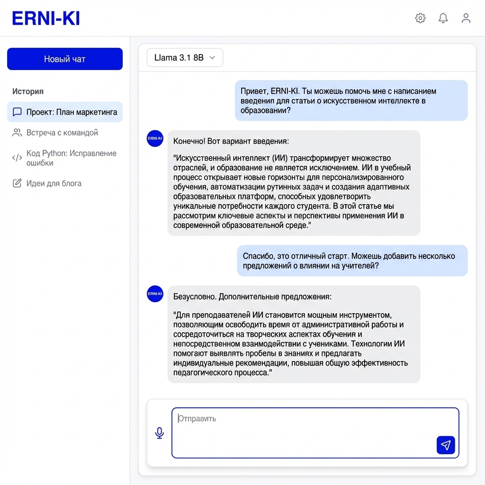
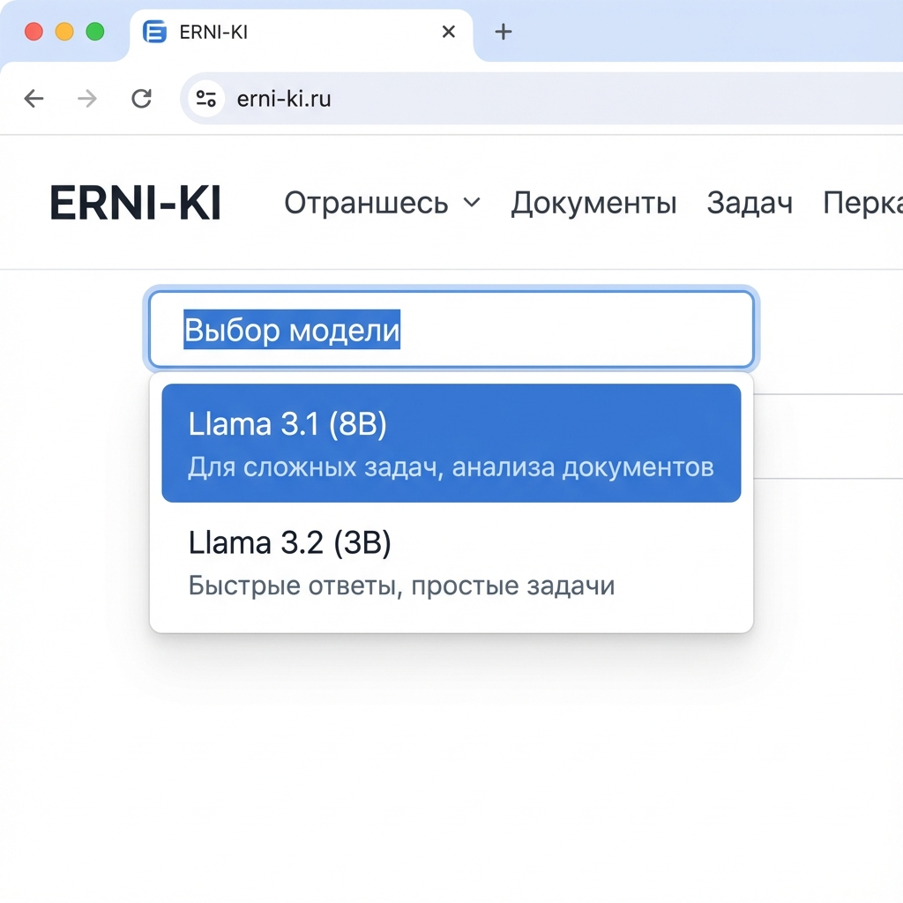

Основы работы с OpenWebUI
Добро пожаловать! Это руководство поможет вам сделать первые шаги в использовании нашего корпоративного AI-ассистента.
1. Быстрый старт: Ваши первые 5 минут
Давайте не будем читать теорию, а сразу попробуем. Следуйте этим шагам:
Шаг 1: Вход
Перейдите на ki.erni-gruppe.ch и войдите через корпоративную почту.
Шаг 2: Выбор модели
Сверху выберите модель в зависимости от задачи. Для начала попробуйте lokal / gpt-oss / komplexe Themen (20.9B) — мощная локальная модель для сложных задач.
Шаг 3: Первый запрос
Напишите в чат: "Привет! Я менеджер проекта. Составь план встречи для обсуждения рисков нового релиза. У нас есть 30 минут."
2. Анатомия идеального диалога
Посмотрите на скриншот интерфейса. Вот что важно знать:
🎯 Контекст (Левая панель)
AI помнит только то, что в текущем чате. Хотите сменить тему? Создайте Новый чат (+), чтобы не путать модель.
⚙️ Настройки (Верхняя панель)
Здесь выбираются модели. Есть внешние (ext) для сложных задач, локальные (local/lokal) для конфиденциальных данных, и агенты для специализированных задач.
3. Какую модель выбрать?
В ERNI-KI доступны различные типы моделей: внешние (external), локальные (local) и специализированные агенты.
Внешние модели (External)
| Модель | Для чего лучше всего? |
|---|---|
| 🌐 ext / gpt-4.1 / einfache Fragen | Простые вопросы, быстрые ответы, общие задачи. |
| 🧠 ext / gpt-5.1 / complexe Themen | Сложные темы, глубокий анализ, креативные задачи. |
| 👁️ ext / gpt 4.1 / Vision | Анализ изображений, диаграмм, скриншотов. |
Локальные модели (Local)
| Модель | Для чего лучше всего? |
|---|---|
| 🔒 lokal / gpt-oss / komplexe Themen (20.9B) | Конфиденциальные данные, сложные задачи, анализ документов. Работает на наших GPU. |
| 📷 local / Gemma / private Vision (9B) | Приватный анализ изображений, работа с визуальным контентом без отправки во внешние сервисы. |
Специализированные агенты
| Агент | Для чего лучше всего? |
|---|---|
| 👥 agent / HR Wissens | Вопросы по HR, кадровая политика, корпоративные процедуры. |
| 🏗️ agent / Holzbau PL Rapport | Деревянное строительство, отчёты по проектам, специализированная документация. |
4. Первый диалог
Просто введите свой вопрос в поле внизу экрана и нажмите Enter. Вы можете общаться с AI как с коллегой.
Пример запроса:
Напиши план совещания по запуску нового проекта "Эверест" на 30 минут. Участники: маркетинг, разработка, продажи.🎤 Голосовые функции
Voice Input (Голосовой ввод)
Вместо набора текста вы можете использовать микрофон для голосового ввода. Система автоматически преобразует вашу речь в текст (Speech-to-Text).
Как включить: Нажмите на иконку микрофона 🎤 справа от поля ввода.
Voice Mode (Голосовой режим)
Полноценный голосовой диалог с AI — вы говорите, AI отвечает голосом. Идеально для громкой связи или когда руки заняты.
Как включить: Нажмите на иконку динамика 🔊 рядом с микрофоном.
🔒 Temporary Chat (Временный чат)
Временный чат — это режим приватности, в котором вся переписка удаляется сразу после закрытия окна. История не сохраняется.
Когда использовать:
- Работа с конфиденциальными данными
- Тестирование промптов
- Личные вопросы
- Эксперименты, которые не нужно сохранять
Как включить: В верхней панели чата найдите тумблер "Временный чат" и активируйте его перед началом беседы.
📝 Notes (Заметки)
Заметки — это ваш личный блокнот прямо в интерфейсе ERNI-KI. Удобно для сохранения важных промптов, результатов или идей.
Как использовать:
- Нажмите на иконку "Заметки" 📝 в боковой панели
- Создайте новую заметку
- Добавьте текст, промпты или ссылки
- Заметки сохраняются автоматически
© 2025 Корпоративный AI Портал. Разработано командой DIZ.
💡 Pro Tips (Official Docs)
- Быстрый доступ к файлам: Введите
#в чате, чтобы открыть список загруженных документов и добавить их в контекст. - Веб-поиск: Введите URL сайта после
#(например,#https://example.com), чтобы AI прочитал его содержимое. - Offline Mode: ERNI-KI работает полностью локально. Если вы видите ошибки загрузки, проверьте переменную
HF_HUB_OFFLINE=1.